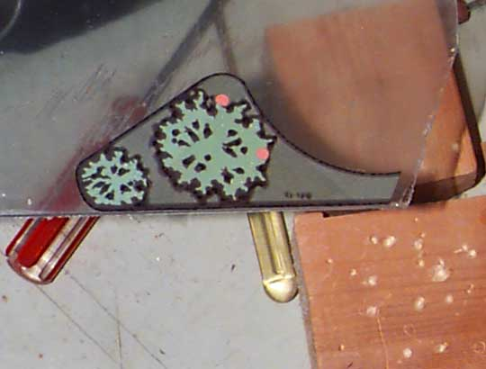

This is the low-quality paper image of a High Speed plastic glued to a sheet of Plexiglass. Some cutting time is being saved by lining up the bottom edge to the pre-cut edge of the Plexiglass.
Entire article and photographs copyright © 1998 Dan Wilga. All rights reserved. May not be reprinted without permission.